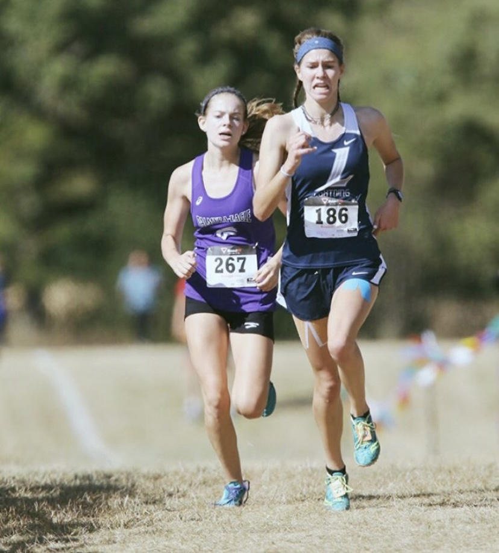

My Running Career
For a majority of my life I have been running competitively. I started running cross country in grade school, and continued it throughout my high school career. During high school I also started running track and field, during track I would run shorter distances like the 800 and 1600 meter races.

Since I have gotten to UW Madison, I have stopped running as frequently, and I no longer participate on an organized team. I still make an effort to get outside and run with friends at least two or three times a week to unwind.